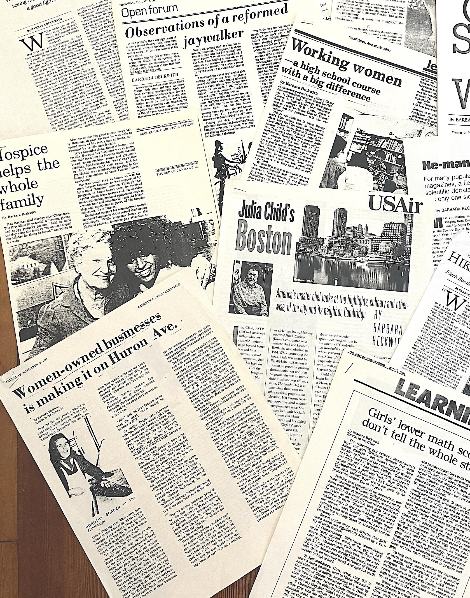

Barbara Beckwith has published a memoir!

Barbara Beckwith was born in Brooklyn, raised in new Jersey, and settled in 1960s Cambridge,
Massachusetts, where she
became a teacher, activist, journalist, writer and organizer.
To write her memoir, Barbara combed through more than 70 years of "paper" she had saved - letters,
diaries, travel logs,
curriculum she developed, and articles she wrote - to take the reader through the arc of her
life.
To write her memoir, Barbara combed through more than 70 years of "paper" she had saved - letters, diaries, travel logs, curriculum she developed, and articles she wrote - to take the reader through the arc of her life.

You can download the free eBook or PDF of Paper Keeper here

There are a limited number of high-quality, locally-printed, paperback copies:
Contact Barbara at beckwithb@aol.com for more information

The eBook and print-on-demand paperback of Paper Keeper are now available
on
Amazon (and should be available at barnesandnoble.com by May 1, 2026)


A look inside!